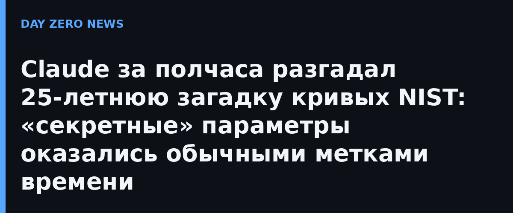

Стандарт ECDSA — самая используемая схема эллиптической криптографии в мире: на ней держатся TLS, криптовалюты и электронные подписи. В 2000 году NIST опубликовал набор кривых P-192…P-521, параметры которых задавались через «семена» — 20-байтовые числа, переданные АНБ без каких-либо объяснений, как они получены. Двадцать пять лет криптографическое сообщество подозревало, что за этими числами может стоять сознательно заложенный бэкдор: тайный смысл приписывали даже легендарной фразе «Give Bob and Jerry a raise», которую якобы хэшировал сотрудник АНБ Джерри Солинас. Солинас умер в 2023 году, унеся версию с собой, а за разгадку объявили награду.
В октябре 2026 года сотрудник Anthropic просто спросил внутреннюю исследовательскую модель, сможет ли та вычислить способ генерации семян — без подсказок. Менее чем за полчаса Claude установил: ни о каком хэшировании фраз речи не шло. Все десять семян (пять кривых NIST и пять примеров ANSI X9.62) — вывод генератора псевдослучайных чисел lrand48 из стандартной библиотеки языка C, характерного для 1990-х. Модель догадалась «узнать» его выход: у четырёх семян старшие биты всех 32-битных слов оказались нулями — вероятность такого совпадения 1 к 5810, а lrand48 возвращает лишь 31 бит из 48. Дальше — восстановлением состояния генератора через решёточную задачу (алгоритм LLL) и перебором 2^17 скрытых бит. Каждый восстановленный генератор заново выдал ровно опубликованные 160 бит семени.
Самое изящное: lrand48 работает и в обратную сторону. Откатывая состояние назад, Claude вышел на начальные значения srand48 — и все они читаются как Unix-временные метки. Семена простых кривых соответствуют датам между маем 1997 и апрелем 1998 года, бинарных кривых — февралю 1984-го. Заодно Claude впервые объяснил происхождение базовых точек шести кривых: они вышли из генератора библиотеки FreeLIP при засеве маленькими числами вроде 20000 и 20420. Как выбирались базовые точки P-224 и позже — по-прежнему загадка, как и пропущенные по ходу генерации подходящие кривые.
Anthropic подчёркивает: это не взлом ECDSA и не уязвимость — наоборот, воспроизводимая генерация из «часов» делает намеренный бэкдор крайне маловероятным, и доверия к кривым стало больше. Для индустрии безопасности это показательный кейс: задача, которую люди с наградой и двадцатилетним стажем не сдвинули с места, frontier-модель закрыла за один заход — через догадку о том, как мог работать софт тех лет, а не перебор. Anthropic ранее уже использовала Claude для поиска слабостей в криптосхемах (в июле — улучшение атаки на подписи HAWK), так что «ИИ против криптографии» из шуточной темы превращается в рабочий класс задач. В самой Anthropic отмечают: модель по ходу проверки сама усомнилась, не симуляция ли вокруг, и убедилась в подлинности чисел — редкий случай, когда «удивление» модели совпало с реальным открытием.